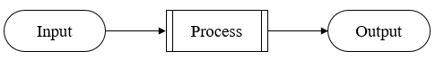

H 图：聚焦系统；强调层级划分
IPO 图：聚焦模块内部的功能定义
- 详细设计阶段最常用的工具
- H 图把系统按层次拆分，不体现层级的细节
- IPO
图告诉程序员每个模块具体该设计及实现
- 用来说明每个模块的输入 Input、处理 Process 和输出 Output
- 直观地展示了数据是怎么进来的、经过了什么处理、最后怎么出去的，所以它能清楚地体现数据流和控制流
- 消除分析和设计之间的鸿沟
- 输入 Input
- 模块需要什么数据、用户请求、原材料
- 处理 Process
- 模块怎么处理数据
- 输出 Output
- 处理完产生什么结果

IPO 图
提交订单时，系统计算最终应付金额
1. 输入 (Input)
- 商品列表（包含商品ID、购买数量）
- 用户选择的优惠券信息
- 配送地址
2. 处理 (Process)
- 根据商品ID查询每个商品的单价
- 计算商品小计总额（单价 × 数量）
- 根据优惠券规则，计算并应用折扣金额
- 根据配送地址，计算配送费用
- 汇总所有费用，得出订单总金额
3. 输出 (Output)
- 订单最终总金额
- 费用明细（商品总价、优惠金额、运费）
- （如果优惠券无效）返回无效优惠提示
计算员工薪资
1. 输入 (Input)
- 员工本月工时
- 员工的时薪
- 适用的税率
2. 处理 (Process)
- 计算总薪资：总薪资 = 工时 × 时薪
- 计算应缴税额：税额 = 总薪资 × 税率
- 计算净薪资：净薪资 = 总薪资 - 税额
3. 输出 (Output)
- 员工的净薪资（实发工资）
- 扣税详情
- 输入处理输出图 Input Process Output diagram